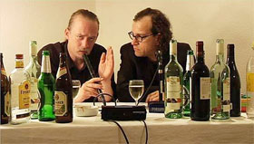

UNDERDOX DOKUMENTE

Foto: 50 Jahre Oberhausener Missverständnis
Das UNDERDOX-Kurzfilmprogramm mit Dokumentarfilmen:
25572 Büttel
D 2012 – 5 Min. – HD-file
R: Rainer Komers
50 Jahre Oberhausener Missverständnis (50th Anniversary of Oberhausen Disaccord)
D 2012 – 2 Min. – BluRay
R: Markus Mischkowski & Kai Maria Steinkühler
Endless Day
D 2012 – 10 Min. – dt. OF – 16mm
R: Anna Ewert
Jeune, révolution! 2007-2012
F/D 2012 – 13 Min. – franz. OmU – BluRay
R: Claire Angelini
Journal
Belgien 2013 – 16 Min. – ohne Dialoge – BluRay
R: Sirah Foighel Brutmann & Eitan Efrat
Kirik Beyaz Laleler (Off-White Tulips)
2013 – 24 Min. – BluRay
R: Aykan Safoǧlu
Okin geht zum Friseur
D 2012 – 10 Min. – dt. OF – DVD
R: Jakob Schreier